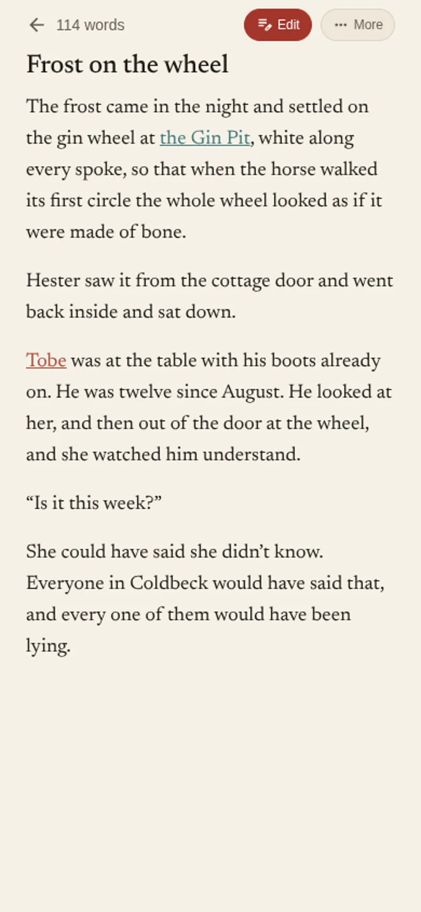
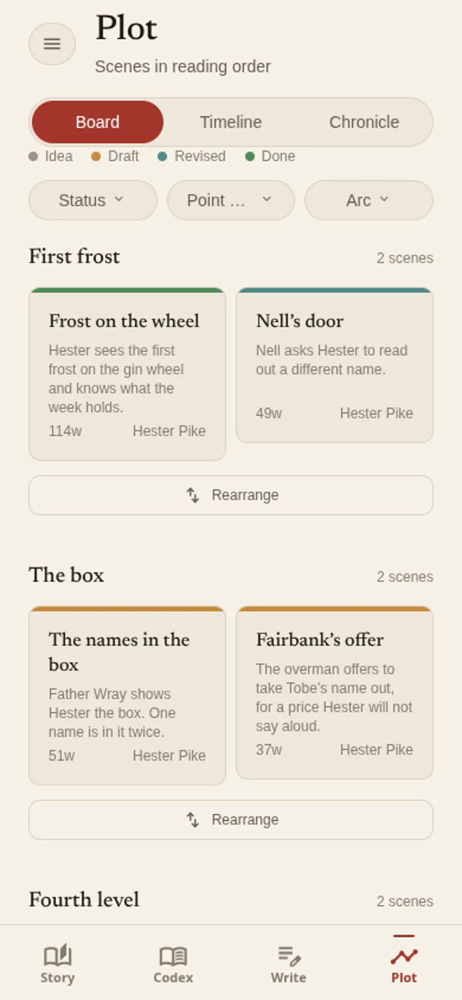

Write the book, and keep its bible in the same place.
Itogatari keeps your characters, places and world beside the chapters you are writing. Name someone in a scene and their page knows every scene they are in. It works offline, on your phone and your PC, with no account.
糸語り, itogatari: “thread-telling”.

Codex
Who is in it
Every person, place and piece of the world, each on a page of its own that you can fill in as you go.
- Characters with a role, pronouns, an age worked out from your story's calendar, what they want and what they need, where their arc starts and ends, their quotes, traits and relationships, and a family tree.
- Places that sit inside other places, with a map you can pin them on.
- Worldbuilding for factions, magic systems, species, religions and customs, and kinds of record you make up yourself.
- Where they appear. Every record lists the scenes it is in, and shows how long the book goes without it.

Write
Writing it
Chapters and scenes, saved as you type. The bible is never more than a tap away from the sentence you are on.
- Mentions. Type @ and a name. In the finished text the name is a link, coloured by whether it is a person or a place, and tapping it shows their page without leaving the scene.
- Focus mode, find and replace, comments, and every earlier version of a scene to go back to.
- Split and merge scenes, and keep cut passages in Cuttings to put back later.
- Where you left off. Leave yourself a line when you stop, and the app opens on it next time.
- Read it through as a book, or have it read aloud.

Plot
The shape of it
The same scenes, laid out so you can see the book at once.
- A corkboard of scenes by chapter. Drag a card, or tap it and then tap where it goes.
- A timeline of beats in story order, and a chronicle of who is where, by date in your story's own calendar.
- Arcs, threads, and setups with the payoffs they point to.
- A pacing chart, a continuity check, and a list of loose ends.

Story
Every day
- A word goal for the day and a target for the book.
- A streak, and a finish date worked out from your pace.
- Writing sprints with a timer.
- Badges for what the work adds up to over time.
Export
Sending it out
- The manuscript as PDF, EPUB, Word or Markdown.
- A standard submission manuscript, with a query letter and a synopsis.
- A glossary of every name in the book.
- A revision outline, scene by scene.
Your files
Keeping it
- Everything stays on your device. There is no account, and nothing is sent anywhere unless you set it up.
- Automatic backups to a folder, a WebDAV server or your own database, sealed with a passphrase if you want.
- Sync your phone with your PC over Wi-Fi by scanning a code, and see every change before it is made.
- A fingerprint lock on Android.
Settings
Language and look
- In English, Japanese (日本語) and Filipino.
- A typeface made for easy reading, in Settings.
- Light and dark, following your phone or set by hand.
- Four app icons to choose from.
Download
The latest version, from GitHub.
Android
For Android 7 and later. Your phone asks once to allow installs from your browser.
Once it is installed, the app tells you when a new version is out. Every version is on the releases page.